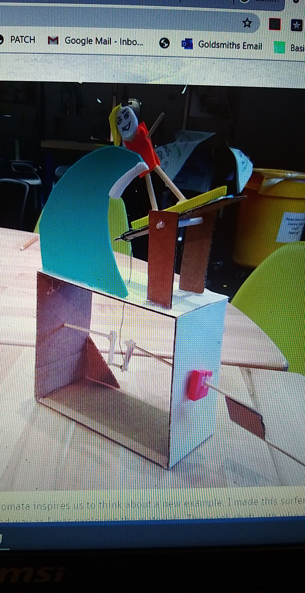
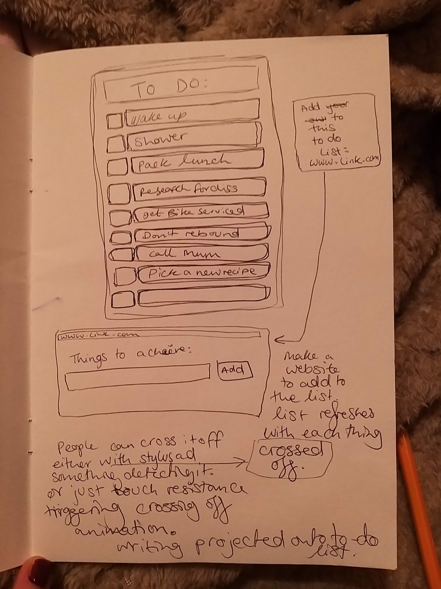
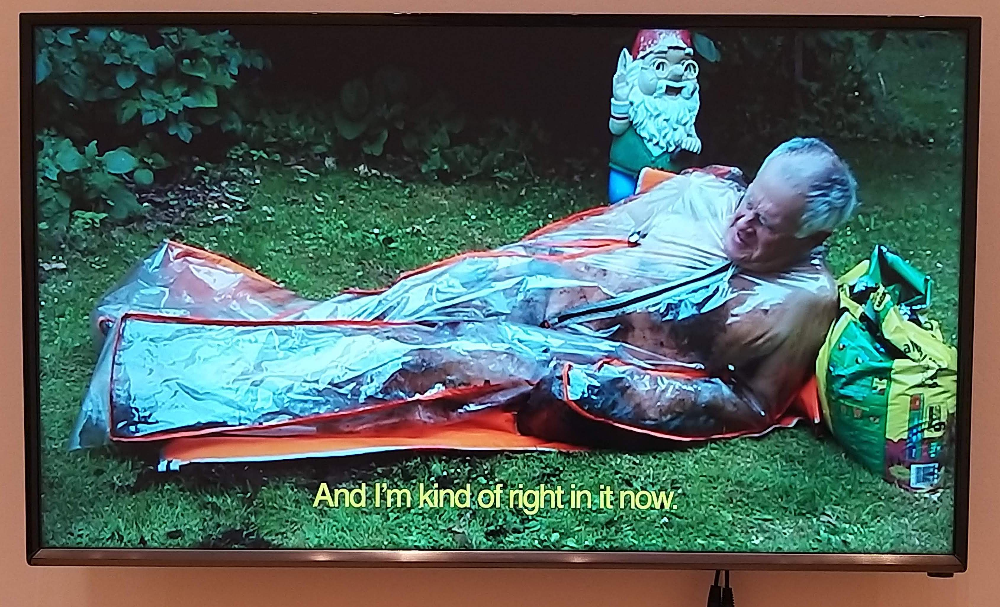
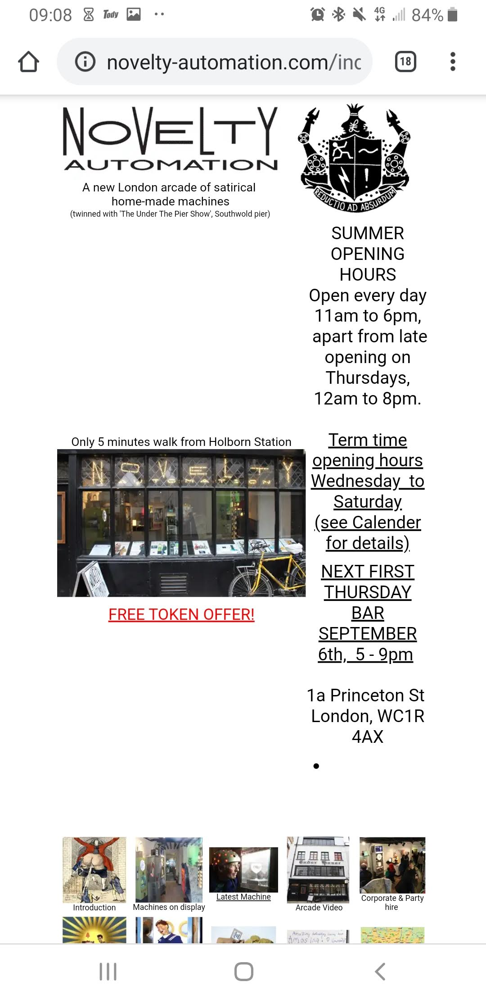
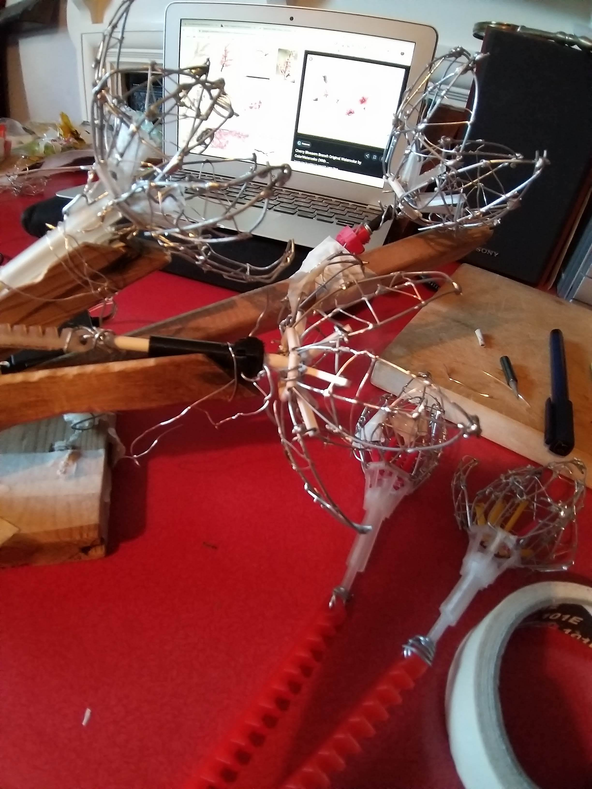
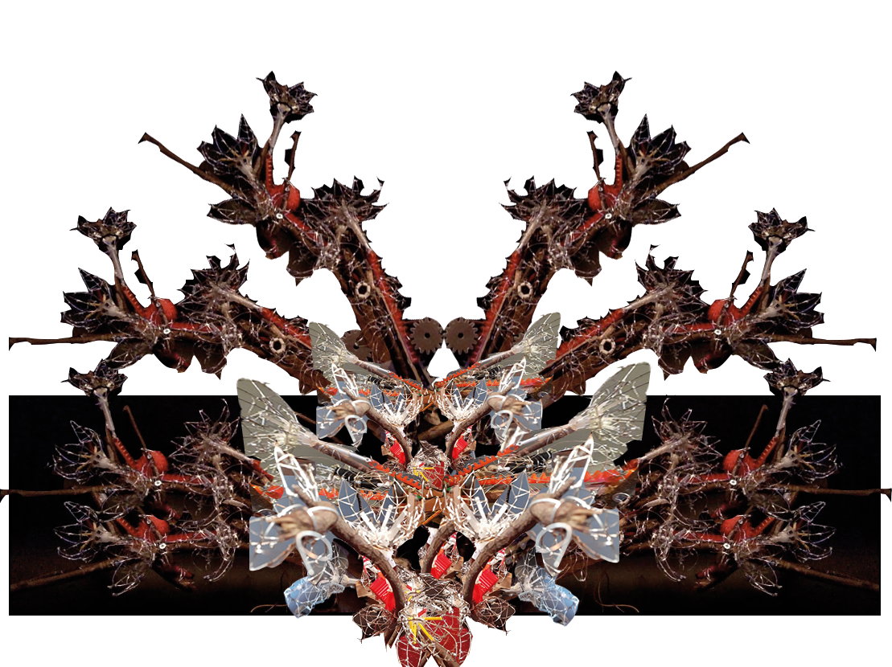

Degree Final Piece 2020 - Adapted Project
Documentation for Blossom Branch - Degree Show adapted project 2020
Links:
- The piece
- A mockup for what it could have been
- github
- tinkerCad flower
- tinkerCad Cogs and Teeth (see git for stl files of both the tinkerCad finished designs to 3D print)
- pinterest boards
- instagram highlights
Concise Description
- A project statement on the concept
Blossom branch, is a piece using the explorations of the flower diagram and movement of a blooming flower to physically ground the conceptual reflections of imbalanced social structures, particularly that of care for those who are critical to maintaining our local/national/global structures, that are overlooked and most at risk. The piece suggests that by peeling back the petals, the flashiest part of the flower, the viewer is able to see the structure in all its contributing parts.
- its adaptation
Initially the piece sprung from my final piece of second year - Beyond the Depths, looking at value and human transcendence and flowers as symbolism to that. Conceptually I was following threads from my dissertation on the care lacking for maintenance workers who are crucial to our structures online and offline, but are often outsourced so not given enough rights nor pay. As lockdown progressed, the Black Lives Matter movement curved my time towards learning more history around slavery and prisons - the current system that we are living in is deeply and structurally biased, enforced by the rich and white. I was envisioning a big tree pre-lockdown, and had just tweaked the 3D print design to optimise the flower creation when the labs closed. Without the lab, the ideas for scaling were halted and more makeshift tools/ materials had to be accrued, but otherwise the piece didn’t need too much adapting.
- how it could have been in a gallery
In a gallery I was envisioning a tree, or at least many branches from a wall, spotlit and quiet. I could also livestream it in an online exhibition, spotlit and blooming gently. There should be a peaceful and steady feel to it.
Potential Audience Engagement
Audience engagement need not be flashy nor forced, the piece is not interactive with the viewer. It is presented to them for reflection, aiming to communicate a speculation for a system where all parts are seen. The lack of external noise amplifies the motor turning the cogs and teeth. The audio track there for context, but not crucial.
Creative Process
Creative research || Technical research || Planning || Aesthetic choices || Iteration
There are a few strands of thought that play through the year:
- Materials and their lifespan,
- grounding conceptual thinking with physical experimentation, grounding the virtual with the earthly
- Art that provokes reflection
- Collaborative art practice, using our voices, being more political
- Mechanical movement
I have decided to present the documentation chronologically, divided by month, so that conceptual themes, material progress and design iteration can be seen to build. All pictures are taken by me unless otherwise stated.
Sept 2019
Creative Research Starting with BioDesign Now, where two pieces caught my eye - Lovely Trash using discarded coffee cups to 3D print with mycelium, and Petra Ritzer’s Material Legacy, a piece comparing degradation lifespans of different materials. She used wekinator and a webcam to detect which material the visitor put in front of it, to project the lifespan on the wall. Both these pieces furthered conceptual thought patterns around art-making and the materials that we choose to make art with. I also had been hoarding the non-recyclable plastic packaging as I didn’t want the responsibility of letting it go to land-fill.
Oct 2019
Planning, Iteration Initially for the start of the year my goals were to work on multiple pieces, continuously be making so when the time came to it, working on the final piece would be natural and not a rush - blog post. For the most part I succeeded in this goal, but not in the way I envisioned. I started with the aim to recreate the flower piece that I did last year but focus on function, as 2019’s piece broke on the opening night. Planning to create a delicate wire flower that would open and when it was at full bloom it would light up an LED in the centre.
Creative Research Simultaneously to the flower prototyping, I started work on Magnet Man. After being inspired by going to an exhibition on the pioneering artist Panagiotis Vassilakis, known as Takis, at the Tate Modern - blog post here. Takis inspired me on many levels - his pieces are kinetic, in line with my own goals, but his body of work is from the 1960s! Harnessing magnetic energy and using electricity to create his sculptures was cutting edge for the time.
Technical research, Aesthetic Choices This exhibition led to planning a sculpture in response, a person in reflection, tapping an earring. A small gesture, a tic, an action occurring when the brain is too occupied to keep a real check of the physical. I explored terracotta air dry clay for this prototype with thoughts that I would create the sculpture in real kiln clay, taking aesthetic inspiration from Takis’ sculptures above.
 |
|---|
Technical research, Planning Flower progress was slow as my previous design was very clunky, this lead to initial CAM follower Automaton research.
|  |
Creative research I also attended the William Blake exhibition, at the tate britain. Blake’s work was captivating in a different way to Takis, each painting or print was often filled with anguish, the colour or forms splashing with emotion. Here offered inspiration for linos that would manifest themselves during lockdown as a relief from uni work.
 |
|---|
Technical research, development Using a makeshift cam-follower automaton and a tenuous LED circuit, further development, using malleable thick pipe cleaners instead of jewellery wire.blog post link to video of it working - I quite like the manual interaction that you have with an automaton, there is a certain nuance to it where the user can feel the aches and bumps of the turning axel
Nov 2019
Technical research, development, reflection To mark the beginning of a new month, I did some reflections for the two pieces. Then material tests for petals of the flower. After looking at this video I decided to do some PVA tests, they did not work very well. At all.
Technical research, planning Further planning and iterations of clay and flower. Following this tutorial to try and get some electromagnets solenoids working after talking to Rob in the lab - blog post here.
Technical research, development following more tutorials for the magnets - I was struggling with the reversing polarities - as I wanted the finger to be repelled as well as attracted back to tap - and the strength of the electromagnets themselves were proving troublesome. Blog Post to show the motors with different polarities (eventually it turned out that the solenoids don’t have a reverse). I also used the lasercutter to cut out a case for the cam to make it look cleaner - blog post for video of that.
Dec 2019
Creative Research, technical research December was full steam ahead for dissertation, conceptually my head was deep in the work of Mierle Laderman Ukeles. Before breaking for christmas however, my lab time was tackling electromagnets. Blog posts here, here, (for video of motors) and here, (for more video of motors), I was mainly frustrated at attraction but lack of repelling. Ukeles was a major influence conceptually for the finished flowers piece, her work delved into the value and appreciation we give to maintenance workers, and how they are brushed to the sidelines of society when really maintenance should be celebrated. These thoughts continued to mull long after the dissertation was submitted. See references Feldman, 2008, for journal below. More Conceptual progression in this blog post, after an Etherstrike meeting.
creative research I also attended the Royal Academy’s exhibition for Anthony Gormley - reflections here, more photos here. My reflections on Gormley notes that mechanics and technicalities are not essential to a piece - that the viewer experiences with all five senses, and often those that are not sight are overlooked (pardon the pun).
creative research, material playing December was also a month of exploring and having a creative break. I attended a workshop run by Ayesha Tan Jones, after stumbling onto a gallery private view.
| |
reflection Also created a piece for a popup show on Personal Development, that ultimately was postponed, forever. This work was playing with development and how you measure it - a reflection of my own development for the dissertation was the ever increasing number of postit notes everywhere. blog post on it. My intention for the piece was for a postit to be projected onto a postit, that visitors could add their own to-do’s for. These would then refresh and shuffle through a collective to-do list.
|  | ||
|---|---|---|
Jan 2020
Creative Research January oh sweet unknowing jan - filled with many more outings to see art. Briefly:
-
Computational Arts Masters Pop up show - I particularly liked Clemence Debaig’s O’Clock piece, reflections found here.
-
Canary Wharf, Winter Lighsts - photos here, Although very commercial, it was helpful in reacquainting myself with interactive physical digital art installations. I particularly liked Studio Chevalvert-Stratum’s piece, for its simplicity and easy interaction. It brought a big crowd, and there was something rather communal about watching a child control pulsing LEDs with their palm. This piece influenced my Digital Performances piece hugely.
-
South London Gallery, where two pieces caught my eye Annie Mackinnon - Compost Daddy - 2018 (below), and Jonas Pequeno - Timeliner 2018.
 |
 |
|---|
Arebyte Residency meetings - first one blog post The regular meetings for a residency in June also started in January, these would start to chew out what collaboration and systems mean, what systems would we need to create in order to collaborate freely and comfortably without hierarchy.
planning Conceptual development - post - My initial iteration of the piece was called Reciprocity of touch, I was looking into how we often miss that the thing we touch, also touches you back. In the same light, the way we treat our care and maintenance workers affects us. My initial piece envisioned for the proposal was nothing like the finished project however. Meeting notes here
Meanwhile, I made slow progress with the Magnet Man, video here, last section of the instagram highlight

Feb 2020
Evidence of planning and thinking about curation of the Degree Show here and here as we started to think through what needed to be done for the upcoming exhbition. Talk of coronavirus in China was in the air, but noone considered that it would be an issue here.
Creative Research led me to the 5th Anniversary year for Novelty Automation, a small nook in london that houses many Arcade Machines and Automata by Tim Hunkins and others. It was sublime. Reflections here, some technical notes were that all his contraptions were very robust and contained, ready for the public to grab at and touch without its destruction. I think this is key to moving installations and yet is frustrating, as a good balance between robustness and delicacy seems impossible to reach. (video of the evening’s crescendo below, you can see me in the red coat in the background!)
|  |
|---|
Technical research and planning While experimenting with flowers and learning Max for Digital Performances module, my mind was brainstorming extra layers for these blooming flowers. One of which was instagram filters - with Spark AR and augmented reality as a whole, it seems like a possible avenue of merging the virtual to the physical, which is often where my practice is drawn to. I was envisioning visitors being able to walk up to the piece and through instagram (a platform that many have, eliminating the bother of downloading a specific app just to interact with it) see another layer of context, whether that be more information, or whether it be more abstract. I often think about the invisible data flows and signals that go around us, Takis seemed to feel the same way, making the focus of some of his pieces the space between the objects, the invisible magnetism holding them in place. With AR, the phone acts like a window into this magical invisible energy.
Some technical research here, for LEDs here, publishing the filter here, Video of the working tree filter here, I did not make the tree, I found it off a free 3D models site, but the hope was to create a model of my own to match the flowers.
Flower development and iteration. The final stage of this particular prototype ended badly, painting the paper mache petals was a poor decision (see below), but it did lead me to do some more and more research into making a better, more functional and prettier flower to which I found the tutorial that would be tweaked for my final piece, thank you Jiri Praus (see video below).
conceptual and creative research Somerset House 24/7 Exhibition on time and modern life, post here. The piece that stood out to me was Marcus Coates, Self Portrait as Time, 2016, (here) he spends 12 hours following the second hand with his finger, giving the illusion that he is controlling time. Time is really interesting, in control and order. It crops up again now, as I collate this documentation in June, in lockdown, our perception of time has gone awry, physical displacement and a quick recalibration to the local, all normal timetabled structure out the window, leaving only endless present. It is long and illuminating, and simultaneously as swift as a tablecloth pulled off by a magician. Time is also used heavily in prisons, we no longer punish with physical beatings (well, not sentenced to them anyway), instead the worse the crime, the more time in a cage. Mentally, ex-convicts speak of having to take control of their own time as a method of survival.
 |
||
| ———— | ————- | ————- |
Flower Progress, wire protyping two:
technical and creative research I started following Prous’ tutorial. Lots of trial and error, turns out using heat shrink tubing instead of brass tubing is not so great when soldering wire flowers together. blog post here.
March 2020
technical and creative research Lots of Progress, with the help of Atau and Pete, technical research on cogs found here. lab progress 3D printing here
 |
||
|---|---|---|
creative development, technical research Flower opening with servo here!!!, printing cogs and teeth that work here, some lovely blossom tree inspiration here. The initial few weeks of March were pleasant, quiet (due to people being afraid of corona) and full of progress as I had Pete’s expertise and the lab mostly to myself.
I then lost my bag, with my laptop. A slight hiccup to it all, but luckily most of my 3D prints were saved on lab SD cards or TinkerCad.
And then the lab closed. Reflections over lockdown and loss of Degree show here
Thinking more on lockdown and social power structures - here
Mid March, with the lab closed, many of my housemates heading to be with their families, I followed their lead and packed up my stuff to go home.
April 2020
April was a blur, quarantined with family, adjusting to them and a slower pace of life, filling my time with sketches, graphic sketches, and mainly LEDs and Max MSP for the digital Performances piece that was due at the end of April.
May 2020
May found more routines, and consisted of the Arebyte residency hotting up, lots of plastic trials and conceptual progress for the flower looking at materiality and decay artists, blog post here.
Mechanical techical research - update progress here, with mechanical flowers working and sorting out this website.
May also brought opportunity to co-host an artist Q&A and talk! Pushing myself out of my comfort zone massively - talking to lovely artists Loren Britton and Isabel Paehr about their duo project MELTIONARY, looking at melting as a way of progressing, offering it as an alternative to deconstructing and starting a new, melting suggests a merging, squishing, evolving process, matter turning to different states with pressure and heat. They had a lot of impact to my musings.
Plastic tests
 |
|---|
Paper Clay
Stepper Motor, video of the stepper motor faltering here. I was advised that stepper motor would be better and more accurate, but because of the delicacy of the flowers and the size, it was a bit too clunky and loud, so I switched back to a normal servo.
 |
|---|
Paper Clay and plastic tests - the lack of lab and thoughts on materiality and plastic in particular, brought about quite a few experiments for melting, ironing, molding plastic packaging and paper mulchy clay. This was partly to see if I could make more cogs without a 3D printer - turns out I couldn’t (alhtough I havn’t given up on this line of thought).
FLOWER DEVELOPMENT here. Masking tape and cardboard were the go to materials for structures initially. Close up of cogs working here
June
technical research, creative development I tinkered with my technique for creating the flower petals, to good success. here.
Planning and iterating around structural ideas, due to lack of scalability I thought that having a hand to hold the flowers would be interesting, would also potentially give more human input into the composition, but it didn’t look great and the conceptual development wasn’t very strong so I scrapped it. I also went through some trials around making molds for new cogs and teeth racks but they did not work.
 |
|---|
Development, Whittling branches here. Notes on talking to Atau and April, with Mehroz and Rob here
| | 
After a meeting with Johanna and Helen, it was suggested that I should use real branches instead of the frame piece that I was currenly using, it reminded Helen of Amanda Lewis’ A Device for the Study of Scarred Landscapes, and I agreed - it would look a lot better with real branches. I am trying to mimic and simulate natural matter with digital and mechanical, in an attempt to both play with the merging of the virtual with the physical and to think through materials and even power structures, the ego of man wanting to reproduce nature. Also was given many good artist research points, blog post on that here. That day I went to my local park adn picked up sticks. Video of flower progress here
| |
I looked at this cherry blossom illustration in particular for composition inspiration.
Physical Experimenation, reflection experimentation of theory:
Pulling from Isabel Paehr and Loren Britton’s notion of melting, and in the light of the resurgence of mass protest for Black Lives Matter movement, the conceptual journey of this piece was a reflection of my own exploration of the deep structural issues in our system. The power structures that we have are based on exploitation and suffering of others. So, to go on as Paehr and Britton are, in grounding theory to physical experimentation, I had a go at melting a few of my own flowers, flowers ironed with discarded plastic packaging, in efforts to peel back the violence, to melt the ‘flash’.
future ideas for these flowers: Photosynthesising flowers, with a solar panel to power the movement Moving with data, organic movements to give visual performance changes
Mock up for bigger tree::

References:
13th. 2016. [DVD] Directed by A. DuVernay.
2014.Initial Cam Follower Image. [image] Available at: https://www.flickr.com/photos/tinkering_studio/14794136427 [Accessed 15 June 2020].
AP Archive, 2019. Moving Sculptures By A Pioneer Of Kinetic Art. [video] Available at: https://www.youtube.com/watch?v=y-pc3sPXbfc [Accessed 15 June 2020].
BCR, C., 2015. Controlling A Solenoid Valve With Arduino - BC Robotics. [online] BC Robotics. Available at: https://www.bc-robotics.com/tutorials/controlling-a-solenoid-valve-with-arduino/?fbclid=IwAR2gXahgHDqbx2eDo6tCJ_JEH_WjZVpMrnvKmL1IzZ3yBoPMhBqtuKJxypk [Accessed 15 June 2020].
Biewen, J., 2017. Seeing White Series. [podcast] Scene On Radio. Available at: https://www.sceneonradio.org/seeing-white/ [Accessed 20 June 2020].
Buzzfeed Nifty, 2017. Rainbow Dipped Nail Polish Flowers. [video] Available at: https://www.youtube.com/watch?v=47ILIYV9E3A [Accessed 15 June 2020].
En.wikipedia.org. n.d. Phoebe Washburn. [online] Available at: https://en.wikipedia.org/wiki/Phoebe_Washburn [Accessed 19 June 2020].
Feldman, M., 2008. Inside the Sanitation System: Mierle Ukeles, Urban Ecology and the Social Circulation of Garbage. Iowa Journal of Cultural Studies, 10(1), pp.42-56.
Hunkin, T., 2020. Novelty Automation’s 5Th Anniversary. [video] Available at: https://www.youtube.com/watch?v=6kpni15-cU4 [Accessed 16 June 2020].
Fraser, I., 2011. Theo Jansen’S Wind-Powered Sculptures | The New Yorker. [video] Available at: https://www.youtube.com/watch?v=Pj-NqWDH2qE [Accessed 19 June 2020].
Kennedy, R., 2016. An Artist Who Calls The Sanitation Department Home. [online] Nytimes.com. Available at: https://www.nytimes.com/2016/09/22/arts/design/mierle-laderman-ukeles-new-york-city-sanitation-department.html [Accessed 15 June 2020].
Lewis, A., n.d. Amanda Lewis - A Device For The Study Of Scarred Landscapes. [online] Newschool.edu. Available at: https://www.newschool.edu/parsons-paris/student-work/?id=17179879447 [Accessed 19 June 2020].
Maia Donda, L., 2019. Why Won’T UCL Treat Us Cleaners Like Its Other Staff? | Leia Maia Donda. [online] the Guardian. Available at: https://www.theguardian.com/commentisfree/2019/dec/04/ucl-cleaners-strike-outsourced-staff [Accessed 19 June 2020].
Opencell.bio. 2019. Biodesign Here Now | Exhibitors. [online] Available at: https://www.opencell.bio/ldf/lovely-trash [Accessed 15 June 2020].
Opencell.bio. 2019. Biodesign Here Now | Exhibitors. [online] Available at: https://www.opencell.bio/ldf/material-legacy [Accessed 15 June 2020].
Prophet, J., 2008. (Trans)Plant (2008). [online] Jane Prophet. Available at: http://www.janeprophet.com/?p=86 [Accessed 19 June 2020].
Rinaldo, K., n.d. Autopoiesis. [online] Kenrinaldo.com. Available at: https://www.kenrinaldo.com/portfolio/autopoiesis/ [Accessed 19 June 2020].
Tate. 2019. William Blake – Exhibition At Tate Britain | Tate. [online] Available at: https://www.tate.org.uk/whats-on/tate-britain/exhibition/william-blake-artist [Accessed 15 June 2020].
Tate. n.d. Introducing Takis – Look Closer | Tate. [online] Available at: https://www.tate.org.uk/art/artists/takis-2019/introducing-takis [Accessed 15 June 2020].
The British Medical Association is the trade union and professional body for doctors in the UK. 2020. Doctors Forced Into Impossible Situations As NHS Staff Report Dangerously Low Levels Of PPE. [online] Available at: https://www.bma.org.uk/news-and-opinion/doctors-forced-into-impossible-situations-as-nhs-staff-report-dangerously-low-levels-of-ppe [Accessed 20 June 2020].
the Guardian. 2020. It’S Shameful To Blame Doctors For Shortages Of PPE | Letter. [online] Available at: https://www.theguardian.com/world/2020/apr/13/its-shameful-to-blame-doctors-for-shortages-of-ppe [Accessed 20 June 2020].
UCTV, 2008. Angela Davis: How Does Change Happen?. [image] Available at: https://www.youtube.com/watch?v=Pc6RHtEbiOA [Accessed 20 June 2020].
Young, J., 2007. Regulated Fool’S Milk Meadow. [online] Guggenheim. Available at: https://www.guggenheim.org/artwork/21047 [Accessed 19 June 2020].
comments powered by Disqus